棚にある 400 の前撮りの様式から選んで、声で相談するだけ。礼拝堂も、港も、神社も——写真と短い動画を、手元の PC で焼く。衣装も髪も、同じ顔のまま何通りでも。
ボタンを探す制作ではなく、プロと言葉を交わす制作。「海の見える礼拝堂で、前撮りを」——それだけで、ディレクターが段取りを組む。
場所の雰囲気、衣装、二人の距離感。言葉にできる所だけでいい。参考の写真があれば貼るだけ。

棚の様式から場所と構図を当てた絵コンテが並ぶ。気に入ったカットだけ残し、気になる所は何度でも作り直す。

確定した一枚から、短い動画へ。写真も動画も 4K まで。夜のあいだに列が進み、朝には選ぶだけ。
和装 200・洋装 200。参拝、手水舎、相合傘、挙式風、バックショット——それぞれ 10 の場所で。ここに並ぶのは、その中の 24。
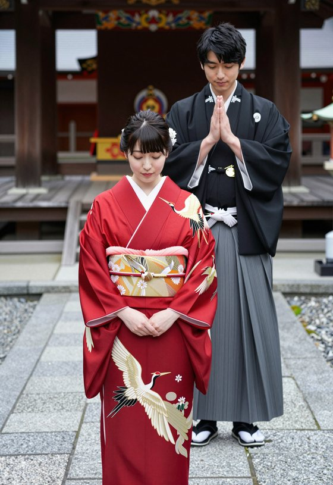
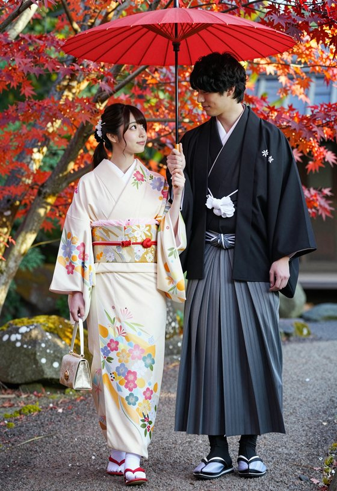
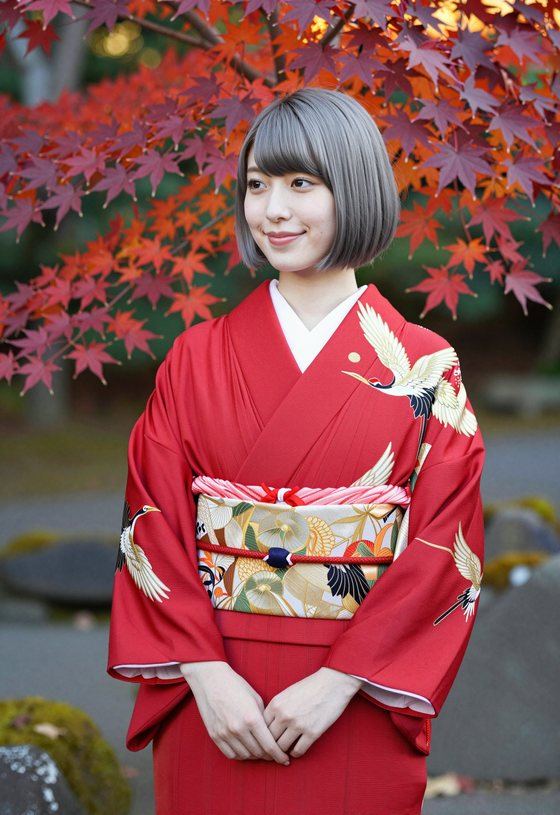
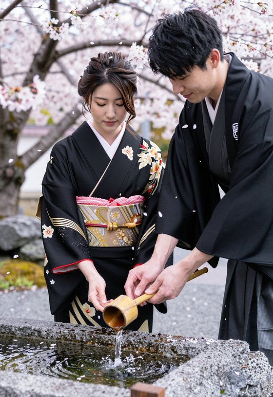
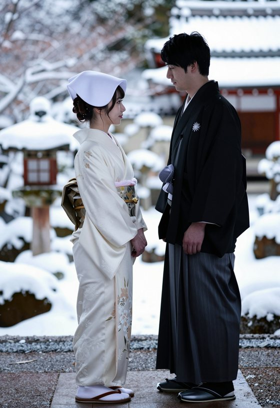
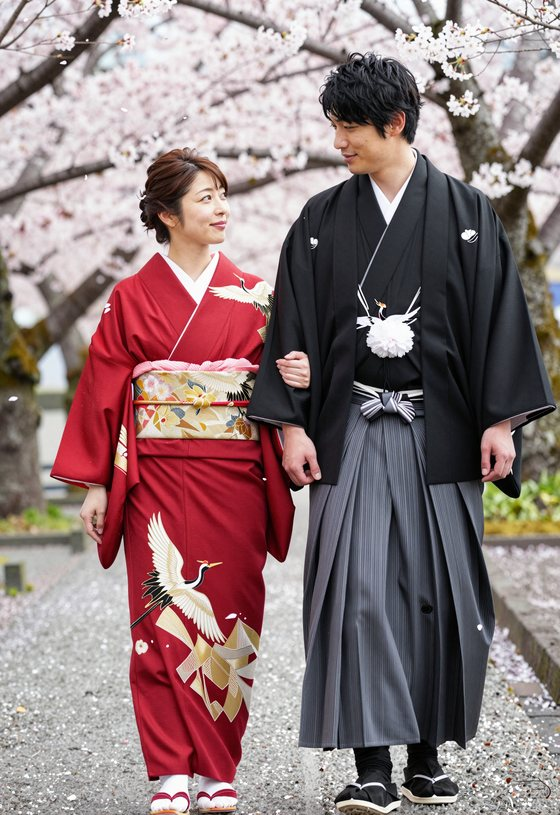
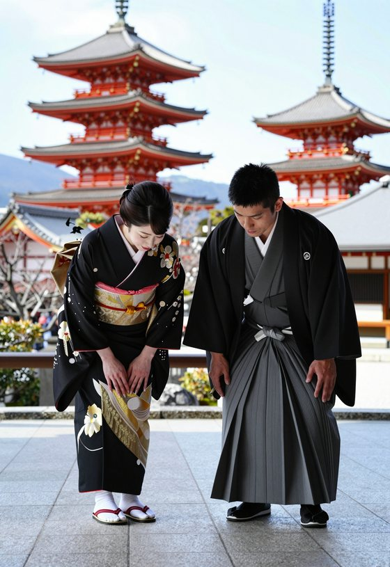
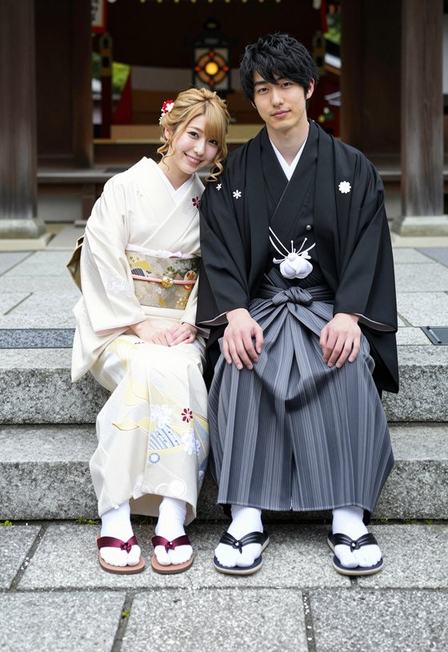
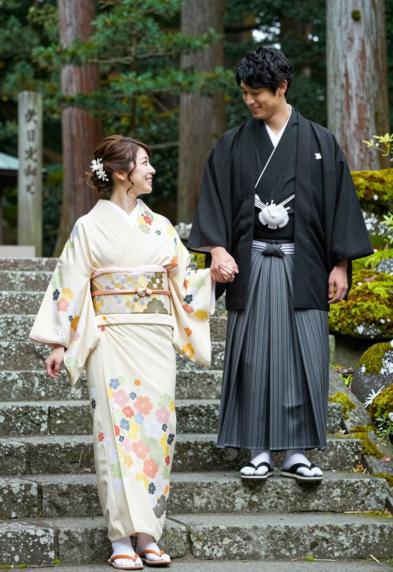
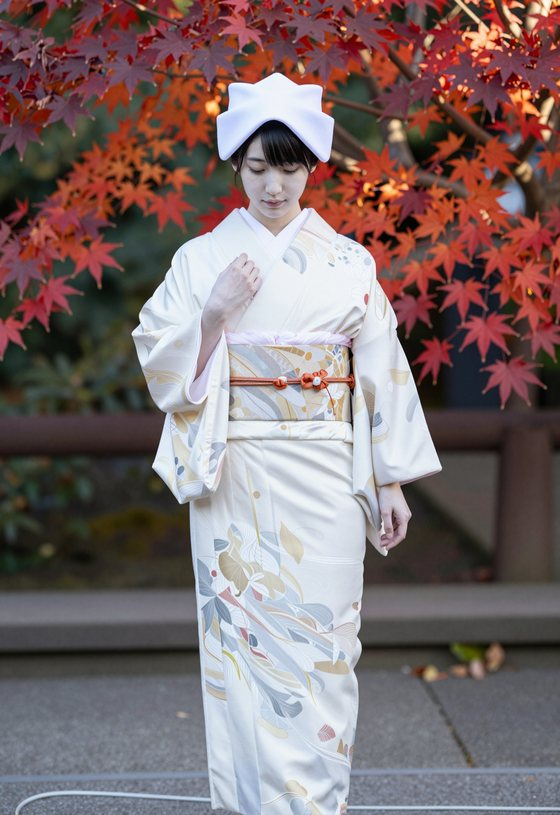
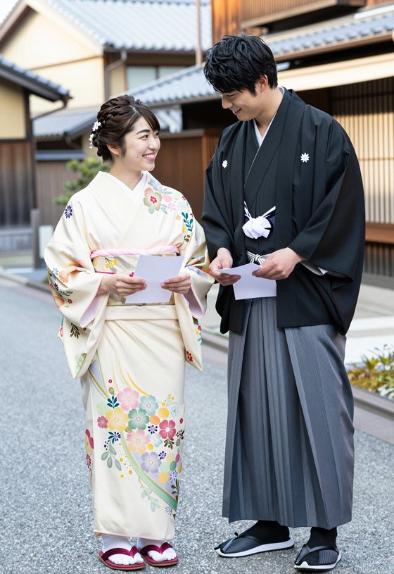
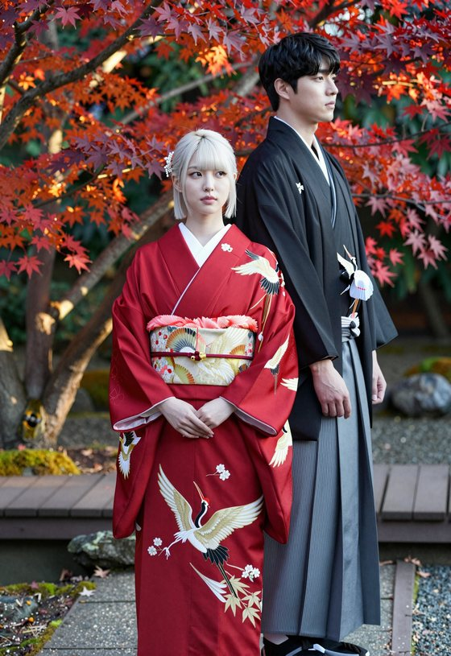
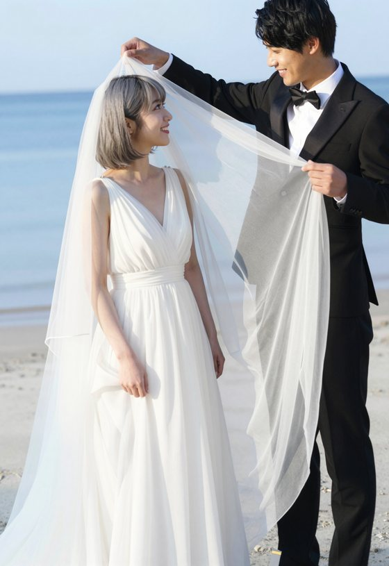
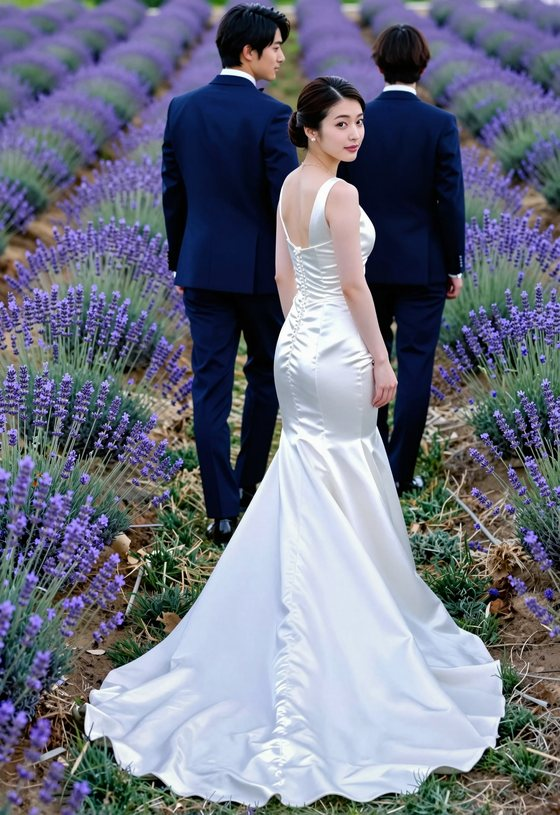
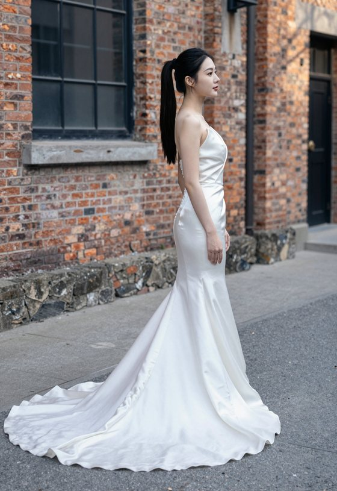
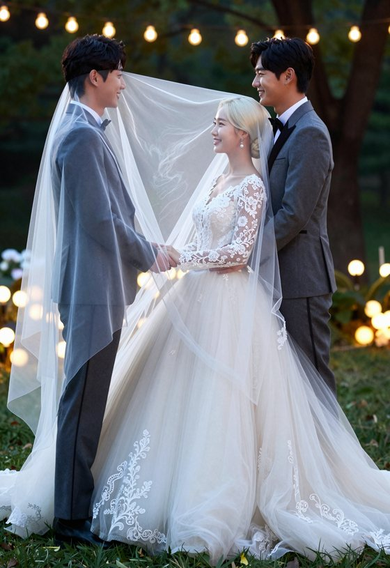
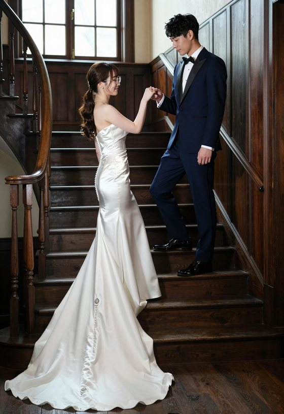
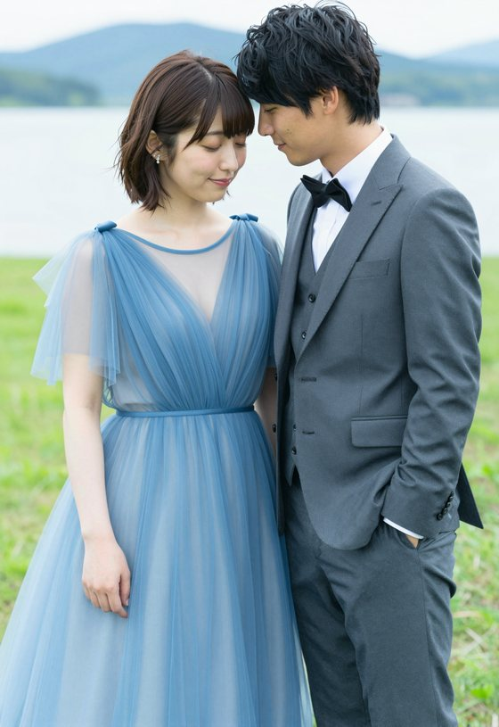
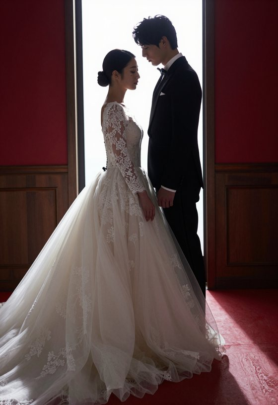
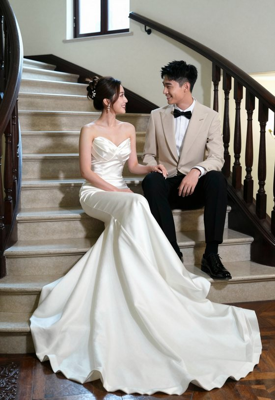
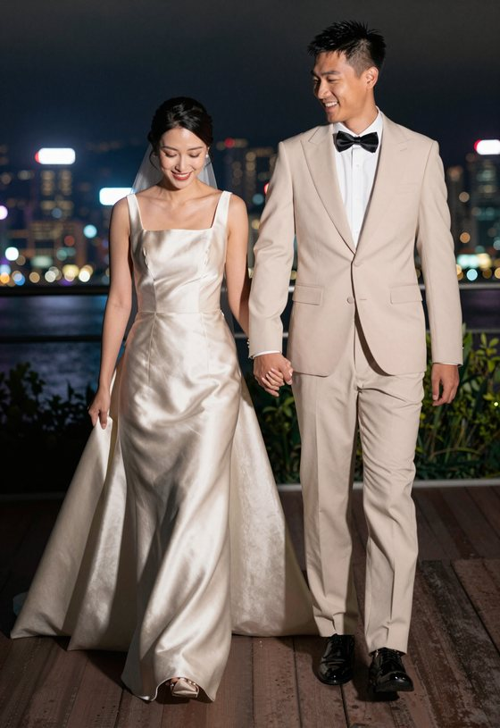
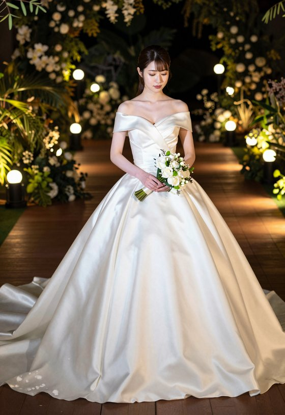
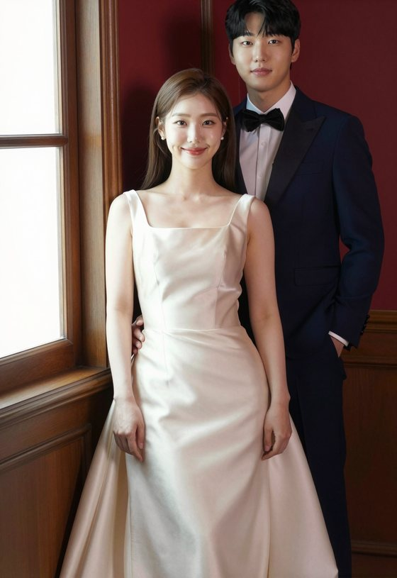
確定した一枚を開始画像に、数秒の動画へ。同じ顔・同じ衣装のまま、灯台の島でも、礼拝堂でも、砂浜でも。